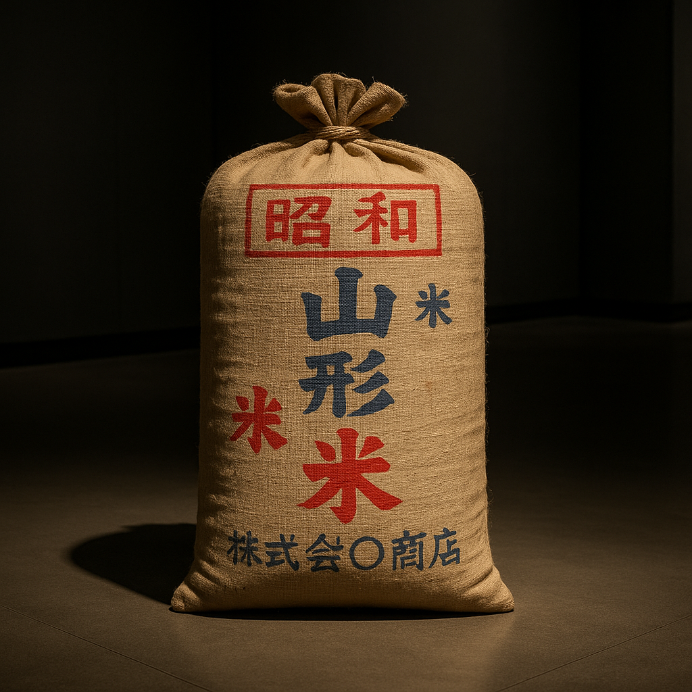

 The Taishō period (1912‑1926) often gets sandwiched between the monumental Meiji Restoration and the cataclysmic Shōwa militarism. In the narrative of Japan’s march into the modern age, it can appear like a brief, quiet interlude. Yet when we peer into these fourteen years, we find an era bubbling with economic booms, political earthquakes, fiery riots, great jazz, and the seeds of democracy. Following our romp through the Meiji era, where Japan burst onto the world stage and built railways, factories and an empire, this chapter picks up the story as the country tries to reconcile modernity with tradition while the world is reshaped by war and revolution. Buckle up: rice prices will skyrocket, political parties will proliferate, earthquakes will reduce cities to ash, and jazzy modern girls will scandalize polite society. Welcome to Taishō, the adolescence of modern Japan.
Japan entered the Taishō era on 30 July 1912 when Emperor Meiji died and his 33‑year‑old son Yoshihito ascended the throne. Unlike his vigorous father, Yoshihito was chronically ill. New World Encyclopedia notes that he had been “sickly as a child” and by 1921 he became so mentally deranged that his son Prince Hirohito had to be appointed Prince Regent. The court did its best to shield the emperor from public view; he waved at parades from behind screens, spoke rarely and sometimes incoherently. The result was that power naturally shifted from an imperial court of elder statesmen (the genrō) to a nascent parliamentary system. This vacuum allowed political parties to flourish and created a climate that historians later dubbed “Taishō democracy.” The first major act of this new order came from an unlikely figure: Hara Takashi, a railroad bureaucrat and political wheeler‑dealer who had never served in the military or held aristocratic rank. In 1918, after the fall of the old guard government during the Rice Riots (more on that soon), Hara became Japan’s first commoner prime minister. He built a party machine through back‑room deals and pork‑barrel projects, but his civilian cabinet marked a dramatic break with previous governments dominated by generals, admirals and nobles. Hara embraced the two‑party competition that had been simmering since the late Meiji period and set the stage for a decade of parliamentary jostling. The Meiji “oligarchs” fumed, but the genie of party politics was out of the bottle.
The Taishō era began amid a global transformation. When World War I erupted in 1914, Japan joined the Allied cause under the Anglo‑Japanese alliance. New World Encyclopedia records that the Imperial Navy seized Germany’s Micronesian colonies and rapidly occupied German holdings in China’s Shandong Province and across the Mariana, Caroline and Marshall Islands. Japan also presented the infamous Twenty‑One Demands to China in 1915, seeking sweeping control over Chinese territory and economy, but international condemnation forced Tokyo to scale back its ambitions. Despite the misstep, Japan emerged from the war with extra colonies and new global prestige. The Versailles Peace Conference gave Japan a permanent seat on the League of Nations Council, recognized its takeover of Shandong and mandated the former German Pacific islands to Japanese administration. Japan had become one of the world’s “Big Five” powers. On the home front, the war economy was a bonanza. With European industries consumed by trench warfare, Japan supplied the Allies with textiles, ships, weapons and industrial goods, transforming itself from a debtor into a creditor nation. A nouveau riche class known as narikin flaunted their wealth; department stores sprouted in Ginza, and Tokyoites bought imported perfumes and phonographs. But the wealth did not trickle down. Wages lagged far behind soaring prices. Inflation doubled the cost of staples like rice, fuel and cloth. The cost of living crisis hit minor officials, factory workers and poor farmers alike. As one popular saying lamented, “We eat rice with salt and wear Western clothes like paupers.”
The imbalance between war profits and popular hardship ignited a social explosion. In July 1918, women in the fishing town of Uozu gathered to protest rice speculators. Their anger spread like wildfire. Over the next eight weeks, riots erupted in 49 cities, 217 towns and 231 villages across Japan. Protesters ransacked rice warehouses, burned the houses of brokers and attacked police stations. The riots were leaderless and spontaneous; an estimated one to two million people participated. Though casualties were relatively low (about 30 people were killed and more than 25,000 arrested), the political impact was seismic. The Terauchi Masatake cabinet resigned, and Hara Takashi was called upon to form the first party‐led government. The riots thus ushered in the era of cabinet governments led by political parties and became a rallying point for labor unions, tenant farmers and women’s rights activists. Historians at MIT note that the rice riots drew attention to the material concerns of the working class and helped catalyze reform movements aimed at preventing radical leftist uprisings. The Yūaikai (Friendly Society), Japan’s earliest labor federation, saw membership surge as workers realized their collective power. By the mid‑1920s, its successor Sōdōmei represented nearly half a million industrial workers and staged strikes across heavy industry. Women, too, organized; the Yūaikai created a women’s department that advocated for female wage earners and joined key strikes. Such activism dovetailed with a growing intellectual movement championing “universal manhood suffrage” and workers’ rights, ideas imported from the West and championed by socialists, anarchists and Christian social reformers.
Inspired by the rice riots and bolstered by labor activism, students, journalists and professors took to the streets demanding the vote. New World Encyclopedia describes how public demonstrations in 1919 and 1920 called for the dismantling of the old electoral system, which limited voting to tax‑paying men. Political parties proliferated: in addition to the conservative Seiyūkai, groups like Rikken Dōshikai, Kenseikai and Rikken Kokumintō jockeyed for power. Hara Takashi’s government attempted to maintain control through gerrymandering and new election laws, but pressure from below was relentless. Labor unions and leftist parties joined forces; the MIT account emphasizes that unions were a significant force behind the successful campaign for universal manhood suffrage, which extended the vote to every male over twenty in 1925. In May 1925 the General Election Law was passed, granting the vote to all male citizens aged 25 or older and virtually doubling the electorate. This expansion of suffrage was a triumph for the “Taishō democracy” movement and a direct outgrowth of the social turmoil unleashed by the rice riots. However, the same year the Diet passed the Peace Preservation Law. According to New World Encyclopedia, this law forbade any change in the political structure or abolition of private property and was designed to suppress socialist and communist agitation. It authorized the arrest of individuals advocating for republicanism or proletarian dictatorship. The law’s passage signaled the conservative backlash to the wave of democracy and illustrated the tension between liberal reform and state control. The government’s fear wasn’t unfounded. The Japan Communist Party (JCP), encouraged by the Comintern, was secretly founded in July 1922. In 1923, the party issued a manifesto calling for the abolition of the monarchy, recognition of the Soviet Union and withdrawal of Japanese troops from overseas. Authorities cracked down; many members were arrested and tortured, and an attempted assassination of Prince Regent Hirohito provided pretext for the Peace Preservation Law. Even though the JCP was outlawed, the broader leftist movement continued to agitate for change, leading to cycles of protest and repression.
While politicians sparred over suffrage and socialism, the streets of Tokyo were alive with new rhythms. The early 1920s saw the birth of “modern girl” (moga) and “modern boy” (mobo) culture. Young women cut their hair into bobs, donned Western dresses and danced the Charleston to American jazz records. Men wore three‑piece suits and read James Joyce. Cafés served black coffee and the latest gossip. Japan Experience notes that Western fads like jazz, dance halls, and the blue‑stocking feminist magazine edited by Hiratsuka Raichō captivated young people and scandalized elders. The term moga became a byword for sexual liberation and consumerism. Cultural conservatives saw the phenomenon as evidence that Japanese morals were decaying under foreign influence. Liberals celebrated it as a sign of cosmopolitan maturity. Either way, Tokyo in the Taishō years looked and sounded like a mini–Harlem Renaissance, albeit with more kimono and fewer saxophones.
On September 1, 1923, just as Tokyoites were picking up their morning newspapers, the ground began to heave. The Great Kantō Earthquake and subsequent firestorms obliterated Tokyo and Yokohama, killing an estimated 140,000 people. Wooden houses toppled and then ignited, creating a fire tornado that incinerated entire neighborhoods. Railway lines twisted like spaghetti; telegraph wires snapped; a fifteen‑meter tsunami smashed coastal towns. The sheer scale of the disaster stunned the world. In the ruined capital, rumors spread that Korean immigrants were poisoning wells, prompting vigilante mobs to murder thousands of Koreans and Chinese. The catastrophe exposed the fragility of Japan’s urban infrastructure and shattered the Taishō mood of giddy modernity. The quake also provided cover for political repression. In what became known as the Amakasu Incident, military police led by Lieutenant Amakasu Masahiko murdered the anarchist Ōsugi Sakae, his partner Itō Noe and her six‑year‑old nephew while they were detained in Tokyo. Japan Experience notes that the murders were part of a broader crackdown on dissidents after the earthquake and triggered outrage among liberals. At the same time, the government turned to technocratic planning; Tokyo was rebuilt with wider boulevards, modern sewers and earthquake‑resistant buildings. The reconstruction gave jobs to thousands of unemployed workers and spurred further economic growth, but the trauma of 1923 lingered. It convinced many conservatives that social unrest could quickly spiral out of control and further justified the Peace Preservation Law.
Abroad, Japan’s Taishō years were marked by ambition tempered by diplomatic realities. During World War I Japan captured German colonies and extracted privileges from China, but it faced resistance from other powers. The Washington Conference of 1921–1922 produced treaties limiting naval tonnage and committing major powers to respect China’s territorial integrity. The Five Power Naval Treaty capped Japan’s capital ships at three-fifths the size of those of the United States and Britain. Nationalists fumed at these constraints, but moderates saw them as necessary to avoid an arms race and to focus on economic development. Japan’s bid for a racial equality clause at Versailles was rejected by Britain and the United States. This snub fueled resentment among nationalists and contributed to the later swing toward militarism. Immigration restrictions abroad also stung. In 1924 the United States enacted the Oriental Exclusion Act, banning Japanese immigration. These diplomatic humiliations created a sense among many Japanese that the Western powers would never treat Japan as an equal, no matter how Westernized it became. Such feelings simmered beneath the surface of Taishō politics and would later provide fertile ground for ultra‑nationalist propaganda.
Despite political storms, the Taishō period was a renaissance for Japanese arts and letters. Writers like Akutagawa Ryūnosuke and Tanizaki Jun’ichirō experimented with modernist styles, blending Japanese folklore with Western narrative techniques. The poet Yosano Akiko championed free love in her tanka, scandalizing conservative readers. Manga pioneer Tezuka Osamu was born in 1928, just after the era ended, but the seeds of his artistic sensibility lay in the Taishō fascination with film and comics. In science, Nobel laureate Yukawa Hideki (born 1907) grew up during this time, absorbing both Confucian and Western education. Even the humble ramen noodle owes a debt to Taishō cosmopolitanism; Chinese chefs set up stalls in Tokyo and Yokohama, creating the prototype for Japan’s later noodle culture.
The Taishō experiment with democracy was fragile. The extension of suffrage energized leftists and labor unions but alarmed conservatives. The Peace Preservation Law served as the state’s tool to jail dissidents and restrict free speech. The assassinations of political figures like Hara Takashi in 1921 and later Prime Minister Hamaguchi Osachi in 1930 underscored the volatility of the era. Economic problems returned when the postwar boom faded and the Great Depression loomed. Rural poverty deepened, and radical ideologies found new adherents. Many former samurai and ultranationalists formed secret societies that promoted expansionism and glorified the emperor. These groups would become key players in the 1930s. In December 1926, the ailing Emperor Taishō died. His son Hirohito ascended the throne as Emperor Shōwa, marking the end of the Taishō era. The democratic experiments of the past decade had opened the political space, but they also provoked a reaction. Within a few years, military officers would assassinate politicians and effectively seize control, turning the promise of Taishō democracy into a cautionary tale. Yet the legacy of the Taishō years endured: universal suffrage remained, labor unions continued to fight for workers’ rights, and the memory of jazz‑infused cafés and bob‑haired moga continued to haunt a nation soon marching to war.
For readers following our journey from Jōmon cord‑marked pots to the high‑speed trains of modern Japan, the Taishō period might feel like a brief parenthesis. But those fourteen years were pivotal. They showed that modernization isn’t a straight line: industrial boom can breed inequality; democratic gains can trigger authoritarian backlash; cultural openness can coexist with xenophobic fears. The Taishō era was Japan’s adolescent phase, full of rebellion, experimentation and angst, before the tragic adulthood of the early Shōwa period. Humor may seem odd in a decade marked by riots and earthquakes, but Taishō society itself relished satire. Newspapers ran cartoons mocking politicians, and café gossip gave rise to countless jokes. One popular quip described the new universal suffrage as “teishu senkyo,” a pun that meant both “husband election” and “universal election,” since women still couldn’t vote. Jazz bands performed cheeky songs like “The Democracy Song,” with the refrain “Minshu ga suki da yo!” (“We love democracy!”), even as police tapped their batons nervously. The tension between laughter and fear gives the Taishō story its poignancy. It reminds us that ordinary people, whether laborers or moga, longed for a better life and that progress often comes in stumbles rather than leaps.